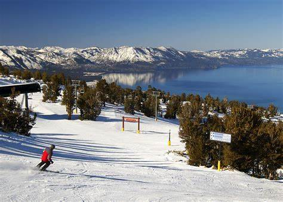
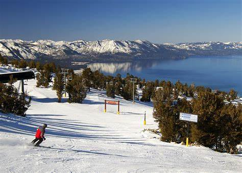

Travel
Yellowstone Park


Geographical Location: North America
Yellowstone National Park, a natural marvel, is predominantly located in the U.S. state of Wyoming, though it also extends into Montana and Idaho. This expansive park, renowned as the first national park in the world, was established in 1872. It spans over 2.2 million acres, making it larger than the states of Rhode Island and Delaware combined. The park's diverse landscape ranges from canyons and alpine rivers to lush forests, hot springs, and gushing geysers, including its most famous, Old Faithful.
The park is situated atop a volcanic hotspot, shaping its unique geothermal features and dramatic scenery. It's nestled in the Rocky Mountains, with elevations from 5,282 to 11,358 feet. The region experiences a complex climate, influencing its varied ecosystems. Yellowstone serves as a refuge for a wide array of wildlife, including grizzly bears, wolves, and herds of bison and elk. Its rich history, stunning natural beauty, and ecological significance make it a cherished destination for nature lovers and outdoor enthusiasts worldwide.
Photo Gallery


Bangkok


Geographical Location: Asia, Thailand
Bangkok, the vibrant capital of Thailand, lies in the country's central plains. This bustling metropolis is nestled on the east bank of the Chao Phraya River, near the Gulf of Thailand, intertwining urbanity with the river's flow.
Strategically positioned, Bangkok serves as Thailand's cultural and economic heartbeat. Its location fosters significant trade, with the river enabling easy access to both the gulf and the interior, making it a pivotal Asian hub.
Photo Gallery


Tahoe
 

Geographical Location: Sierra Nevada mountains, straddles California and Nevada
Tahoe, nestled in the Sierra Nevada mountains, straddles California and Nevada. It's renowned for its picturesque alpine lakes and ski resorts. In summer, its clear, blue waters and scenic trails attract outdoor enthusiasts from around the world.
Its unique position offers a blend of Nevada's desert landscapes and California's lush forests. This creates a stunning contrast, perfect for photography, hiking, and water sports. Tahoe's natural beauty is a year-round attraction for visitors and locals alike.
Photo Gallery